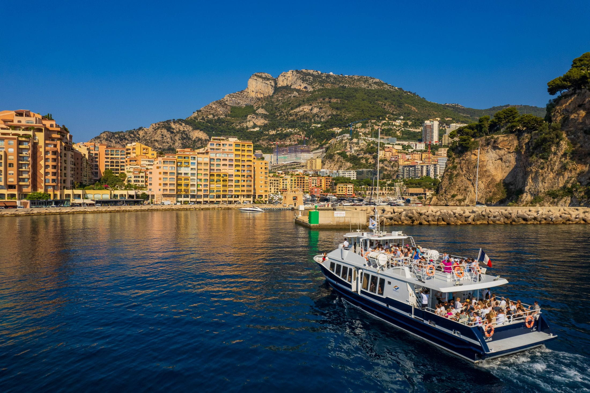

Du château de Guédelon à Beaune
Région : Bourgogne-Franche-Comté, France
Immersion au Moyen Âge sur le chantier de Guédelon, puis découverte des célèbres Hospices de Beaune au cœur des vignobles bourguignons.
Voir le voyage
Découvrez nos séjours organisés, classés par date.
Région : Bourgogne-Franche-Comté, France
Immersion au Moyen Âge sur le chantier de Guédelon, puis découverte des célèbres Hospices de Beaune au cœur des vignobles bourguignons.
Voir le voyage
Région : La Spezia (Ligurie, Italie)
Séjour en Ligurie entre villages colorés, ports de pêche, côte fleurie et excursions en bateau le long des Cinq Terres.
Voir le voyage
Région : Côte d’Azur, France
Escapade sur la Côte d’Azur entre Promenade des Anglais, vieux Nice et visite du musée océanographique de Monaco.
Voir le voyage
Région : Centre-Val de Loire, France
Week-end au cœur des châteaux de la Loire avec visite de Blois en attelage et découverte du majestueux château de Chambord.
Voir le voyage